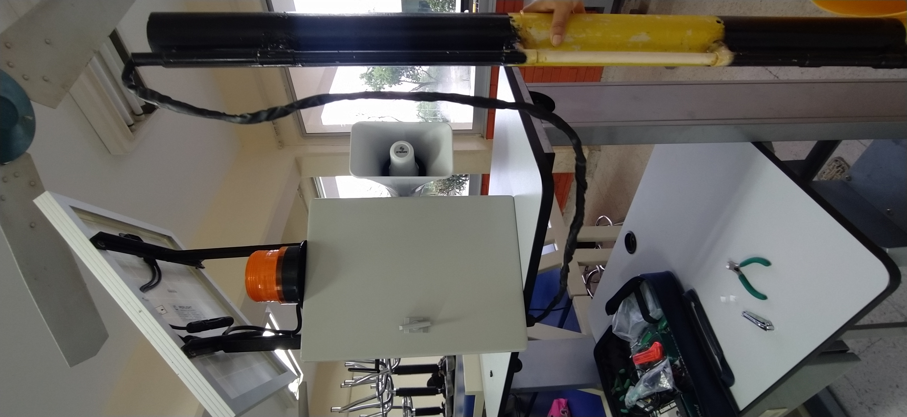
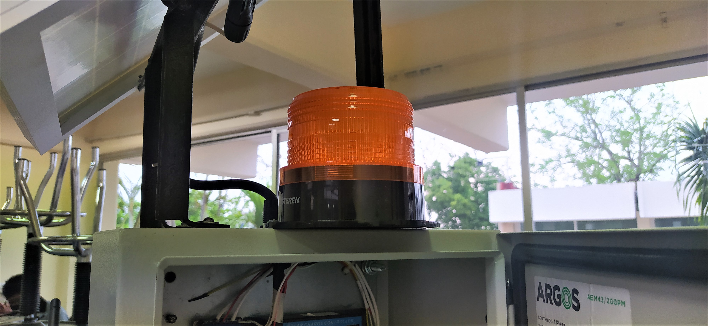
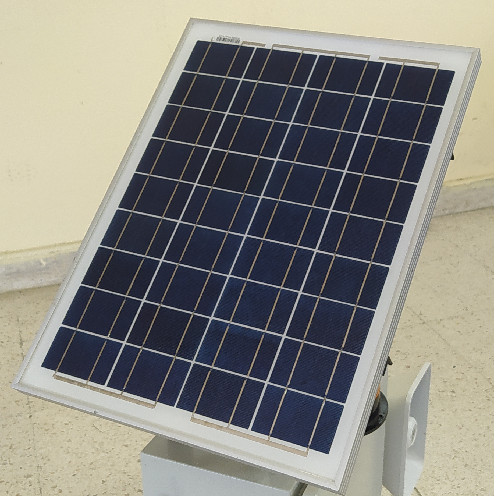
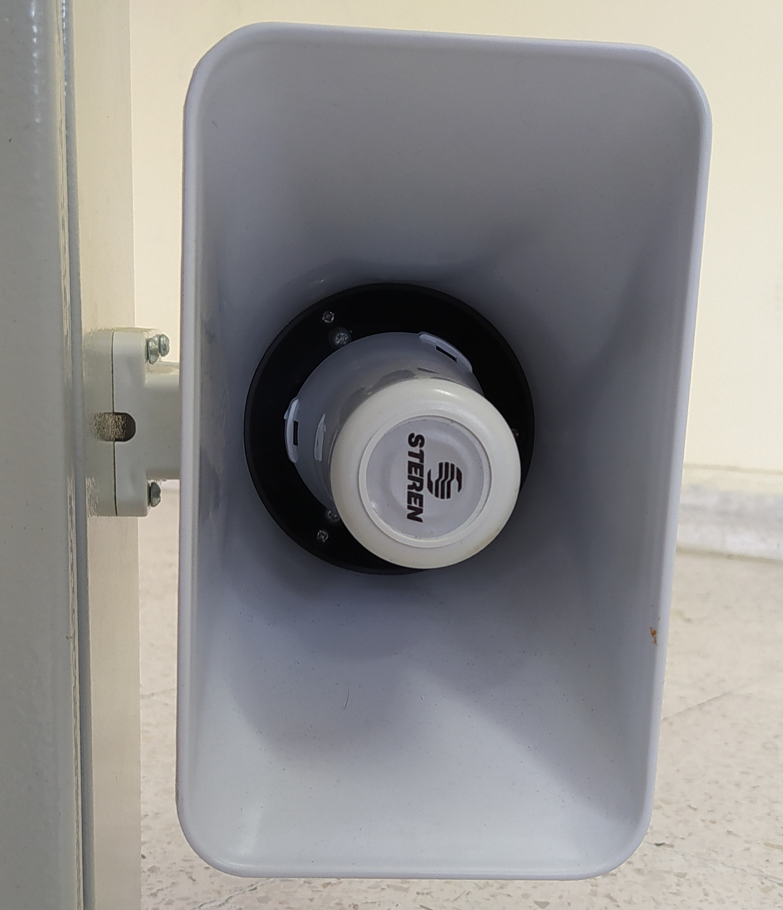

Sistema de Alerta de Inundación
Se diseñó un sistema electrónico inalámbrico de alerta para monitorear el comportamiento en el nivel de cauces del río que representa peligro para las cercanías, con el fin de prevenir las secuelas de las inundaciones en esta zona.
Para ello se usaron unos sensores especiales, una de las ventajas, aparte de su bajo costo, es que los flotadores Reed-Switch son de polipropileno de alta calidad, por lo que su vida útil es muy larga. Debido a su posición horizontal de montaje lateral estos flotadores utilizan un método de pivoteo diferente de otros productos del nivel de flotación. Como un resultado directo de la subida o bajada del agua y ante la proximidad de un campo magnético un interruptor se activa, enviando una señal al circuito electrónico del transmisor. Al subir el nivel del agua se van cerrando los circuitos y el transmisor envía su señal vía Wireless al receptor. Con este instrumento el personal de Monitoreo no tiene que ir hasta el río a verificar el nivel del mismo bajo condiciones atmosféricas adversas (de noche y con tormentas fuertes), lo que contribuye a proteger su integridad física.

Diseño Del Producto
Se muestran imagenes del producto en si y se muestra los componenetes importantes.
Sensores
Se muestra como es el sistema de medicion del nivel del agua.
Luz LED ámbar estrobo para alarmas
Su iluminación es en color ámbar por medio de 24 LEDs. Puede conectarse a fuentes de alimentación de 12 y 24 Vcc. Ofrece hasta 250 destellos por minuto.
Leer Mas Panel Solar
Construcción frontal en vidrio de alta transmisidad, texturizado y templado 3,2 mm, marco de aluminio anodizado tipo 6063, con toma de tierra.

Sirena
Sirena rectangular de dos tonos diferentes, de 92 dB, 30 Watts y alimentación de 12 Vcc.
Leer Mas 